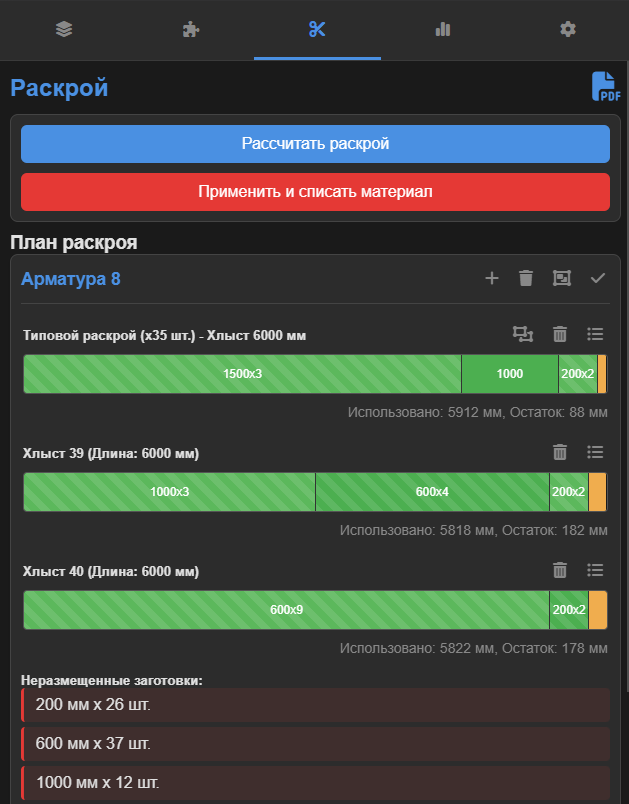

1. Введение
Приложение "Линейный Раскрой" предназначено для оптимизации раскроя длинномерных материалов (арматура, профиль, трубы и т.д.) на заготовки заданных размеров. Оно помогает минимизировать отходы, эффективно использовать остатки и вести учет материалов на складе.
2. Основные разделы (вкладки)
2.1. Вкладка "Материал"
Здесь вы управляете своим складом — добавляете хлысты и остатки, которые будут использоваться для раскроя.

- Добавление материала: Выберите Сортамент и Типоразмер, укажите Длину и Количество.
- Остатки: Если вы добавляете не стандартный хлыст, а полезный остаток с предыдущих раскроев, установите галочку "Остаток".
- Список "На складе": Отображает все материалы. Остатки подсвечиваются оранжевым. Вы можете редактировать () или удалять () любую позицию.
2.2. Вкладка "Заготовки"
На этой вкладке вы формируете список деталей, которые необходимо изготовить.

- Добавление заготовки: Укажите Сортамент, Типоразмер, Длину и Количество. Важно: эти параметры должны совпадать с материалом, который есть у вас на складе.
2.3. Вкладка "Раскрой"
Это главный экран, где происходит расчет, просмотр и редактирование карт раскроя.

- Расчет: Нажмите "Рассчитать раскрой" для автоматического создания плана.
- Группировка: Одинаковые карты раскроя автоматически группируются для компактности (например, "Типовой раскрой x5 шт.").
- Спецификация (): Нажмите на иконку списка в заголовке хлыста, чтобы увидеть детали.
- Информация о дефиците: Если материала не хватило, система покажет, что нужно докупить.
- Ручное редактирование (): Дает полный контроль над раскладкой.
- Добавление детали: Выделите хлыст или группу (она подсветится синим), затем кликните на деталь в списке "Неразмещенные заготовки".
- Удаление детали: Кликните на деталь прямо на визуализации хлыста.
- Разгруппировать (): Позволяет редактировать хлысты из группы по отдельности.
- Сгруппировать (): Позволяет снова сгруппировать одинаковые расклады в режиме редактирования.
- Завершить (): Выход из режима редактирования.
- Применение плана: После того как план готов, нажмите "Применить и списать материал". Это действие спишет использованные хлысты и заготовки со склада и добавит в него новые полезные остатки.
2.4. Вкладка "Статистика"
Здесь отображается подробная аналитика по последнему выполненному раскрою.

- КИМ: Ключевой показатель — Коэффициент Использования Материала.
- Детализация: Точные цифры по деталям, остаткам и отходам.
- Дефицит: Подробный список материалов, которые нужно докупить.
2.5. Вкладка "Настройки"
На этой вкладке вы можете настроить поведение приложения под свои нужды.
- Управление сортаментом: Создавайте свои типы материалов.
- Ширина реза (kerf): Толщина пила или резака. Учитывается во всех расчетах.
- Мин. остаток: Остатки меньше этого значения будут считаться бесполезными отходами.
- Длины для расчета дефицита: Укажите через запятую длины хлыстов, которые вы можете купить (например,
6000, 12000). Если поле пустое, расчет дефицита не производится.
- Стратегия раскроя:
- Минимальный отход: Алгоритм старается использовать как можно меньше стандартных хлыстов.
- Сначала остатки: Алгоритм в первую очередь пытается использовать остатки со склада.